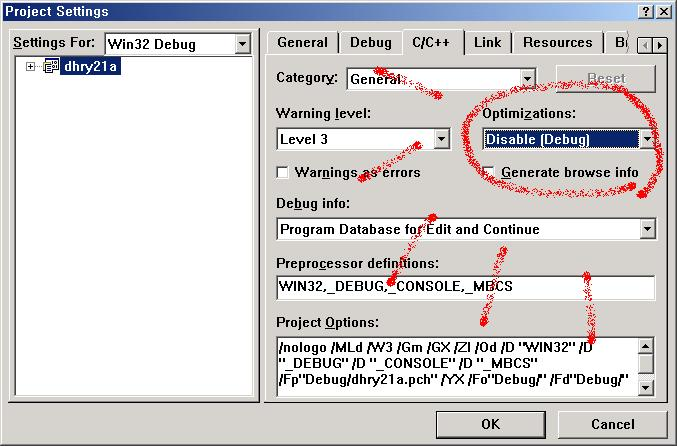
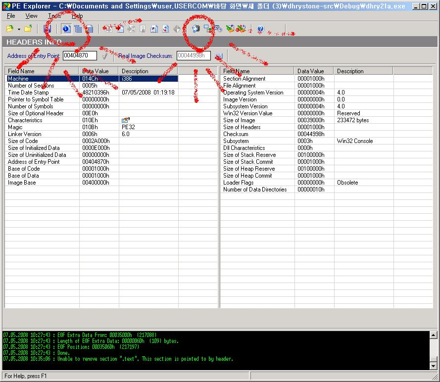
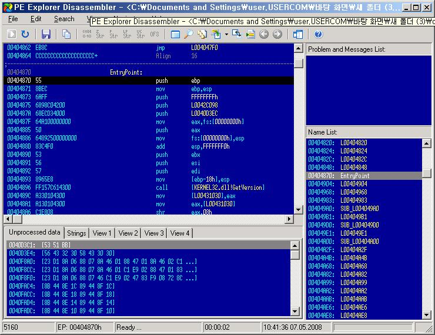
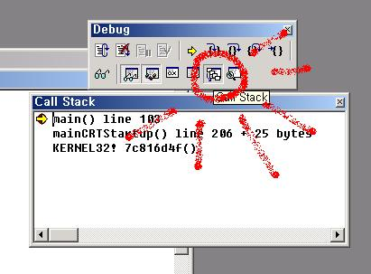
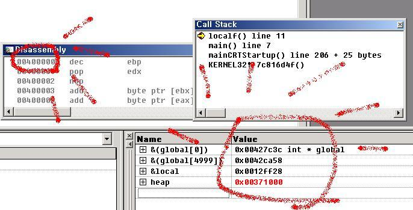
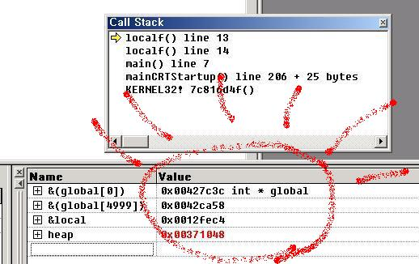
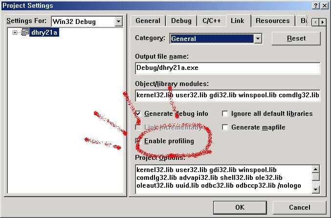
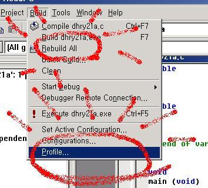
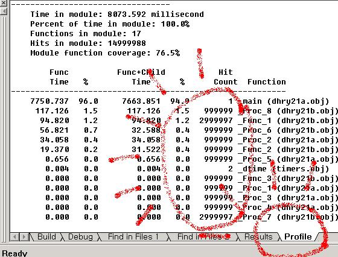

windows (vs 6.0)
1. dhrystone : dhrystone-src.zip
2. setting (@f7 )

3. PE explorer : PE_exp.zip
PE view : PEview.zip

4. f5 (start debug)

5.
ex code)
int global[5000];
int localf();
int main()
{
return localf();
}
int localf()
{
int local=3;
int* heap=new int(3);
return localf();
}


6.


7.
linux (redhat 9.0 -2.4.20 , gcc 3.2.2)
1.
wget dhrystone-src.tar.gz
tar -xzvf dhrystone-src.tar.gz
cd dhrystone-src
2.
gcc -o dhry0 -O0 dhry21a.c dhry21b.c timers.c
ls -al
./dhry0
3.
file dhry0
readelf -a dhry0
objdump -d dhry0
4.
gcc -g -o dhrydebug -O0 dhry21a.c dhry21b.c timers.c
gdb dhrydebug
(gdb) run
(gdb) bt
#0 0x08048fad in Proc_7 (Int_1_Par_Val=10, Int_2_Par_Val=5,
Int_Par_Ref=0x804cb8c) at dhry21b.c:83
#1 0x08048ed4 in Proc_3 (Ptr_Ref_Par=0x804cb48) at dhry21a.c:366
#2 0x08048de9 in Proc_1 (Ptr_Val_Par=0x804cb80) at dhry21a.c:317
#3 0x0804873a in main () at dhry21a.c:181
#4 0x42015574 in __libc_start_main () from /lib/tls/libc.so.6
(gdb) info frame
Stack level 0, frame at 0xbfffda28:
eip = 0x8048fad in Proc_7 (dhry21b.c:83); saved eip 0x8048ed4
called by frame at 0xbfffda48
source language c.
Arglist at 0xbfffda28, args: Int_1_Par_Val=10, Int_2_Par_Val=5,
Int_Par_Ref=0x804cb8c
Locals at 0xbfffda28, Previous frame's sp in esp
Saved registers:
ebp at 0xbfffda28, eip at 0xbfffda2c
(gdb) info local
Int_Loc = 12
(gdb) info address Int_Loc
Symbol "Int_Loc" is a variable at offset -4 from register ebp.
(gdb) info args
Int_1_Par_Val = 10
Int_2_Par_Val = 5
Int_Par_Ref = (One_Fifty *) 0x804cb8c
(gdb) info register
eax 0x11 17
ecx 0x0 0
edx 0x804cb8c 134531980
ebx 0x42130a14 1108544020
esp 0xbfffda24 0xbfffda24
ebp 0xbfffda28 0xbfffda28
esi 0x804cbb0 134532016
edi 0x804cb78 134531960
eip 0x8048fad 0x8048fad
eflags 0x216 534
cs 0x23 35
ss 0x2b 43
ds 0x2b 43
es 0x2b 43
fs 0x0 0
gs 0x33 51
(gdb) x/4 0xbfffda24
0xbfffda24: 0x0000000c 0xbfffda48 0x08048ed4 0x0000000a
(gdb) q
The program is running. Exit anyway? (y or n) y
5.
vi test.c
int global=0;
int localf();
int main()
{
return localf();
}
int localf()
{
int local=3;
int* heap=new int(3);
if(5==global++)
return 0;
else
return localf();
}
g++ -o test test.c -g
gdb test
(gdb) break 13
Breakpoint 1 at 0x80484b0: file test.c, line 13.
(gdb) command
Type commands for when breakpoint 1 is hit, one per line.
End with a line saying just "end".
>printf "local : %x global :%x heap : %x\n",&local,&global,heap
>end
(gdb) run
Starting program: /root/hwhw/test
Breakpoint 1, localf() () at test.c:13
13 if(5==global++)
Current language: auto; currently c++
local : bffff0b4 global :8049620 heap : 8049790
(gdb) c
Continuing.
Breakpoint 1, localf() () at test.c:13
13 if(5==global++)
local : bffff094 global :8049620 heap : 80497a0
(gdb) c
Continuing.
Breakpoint 1, localf() () at test.c:13
13 if(5==global++)
local : bffff074 global :8049620 heap : 80497b0
(gdb) c
Continuing.
Breakpoint 1, localf() () at test.c:13
13 if(5==global++)
local : bffff054 global :8049620 heap : 80497c0
(gdb) c
Continuing.
Breakpoint 1, localf() () at test.c:13
13 if(5==global++)
local : bffff034 global :8049620 heap : 80497d0
(gdb) c
Continuing.
Breakpoint 1, localf() () at test.c:13
13 if(5==global++)
local : bffff014 global :8049620 heap : 80497e0
(gdb)
6.
gcc -pg -o dhryp dhry21a.c dhry21b.c timers.c
./dhryp
gprof dhryp gmon.out
7.
man gcc
gcc -o dhry0 -O0 dhry21a.c dhry21b.c timers.c
gcc -o dhry1 -O1 dhry21a.c dhry21b.c timers.c
gcc -o dhry2 -O2 dhry21a.c dhry21b.c timers.c
gcc -o dhry3 -O3 dhry21a.c dhry21b.c timers.c
gcc -o dhrys -Os dhry21a.c dhry21b.c timers.c